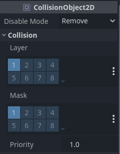
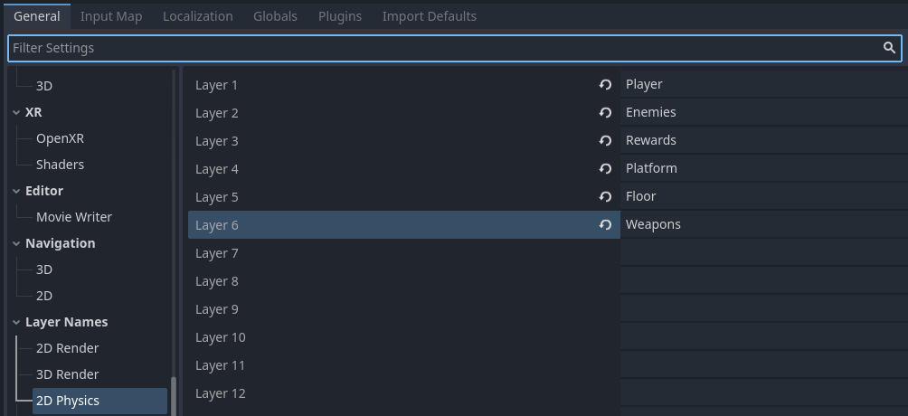
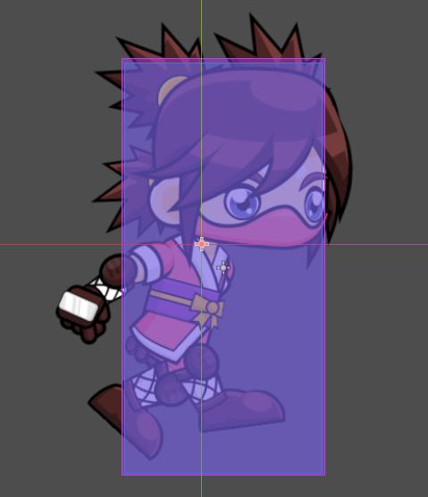
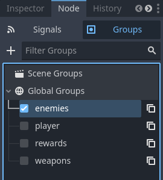

Unit 8.5 Collisions
In this unit, we will explore how to implement collision detection and response in a videogame using the Godot Engine.
First of all, we need to understand the concept of collision layers and masks.
Collision Layers and Masks
Each physics body in Godot can be assigned to one or more collision layers. These layers determine which objects can collide with each other.
Example: if object A is on layer 1 and object B is on layer 2, they will not collide.
A collision mask specifies which layers an object will check for collisions against.
Example: if object A is in layer 1 and has a collision mask that includes layer 2, it will detect collisions with object B that is on layer 2.
Nodes that extend CollisionObject2D (like Area2D, StaticBody2D, KinematicBody2D, RigidBody2D and CharacterBody2D) have properties for setting collision layers and masks.

You can assign names to collision layers in the Project Settings under General > Layer Names > 2D Physics.
A good practice is to place the player character in its own layer (e.g., "Player"), enemies in another layer (e.g., "Enemies"), and environment objects in a third layer (e.g., "Environment") to organize collision detection effectively.

For instance, in our game we can place the player in the "Player" layer (layer 1) and set its collision mask to detect collisions with layers 2 to 5.
Collision Shapes
To detect collisions, physics bodies need to have collision shapes. Godot provides several built-in shape types, such as:
- RectangleShape2D
- CircleShape2D
- CapsuleShape2D
- ConvexPolygonShape2D
- ConcavePolygonShape2D
Detecting collisions on a KinematicBody2D or CharacterBody2D
When using a KinematicBody2D/CharacterBody2D, you can detect collisions during movement using the move_and_collide() or move_and_slide() methods.
Example using move_and_collide():
1 2 3 | |
Example using move_and_slide():
1 2 3 4 | |
Detecting collisions on an Area2D aginst other bodies
An Area2D node can detect when other bodies enter or exit its area using signals.
The easiest way to detect collisions is to attach an Area2D node as a child of the object you want to detect collisions for.
Add an Area2D node and a CollisionShape2D as its child to the Player. Set the shape to define the area. Make sure that the collision shape of the area is a bit larger that the player's collision shape. You can change the debug color of the collision shapes.

Do the same for the Bird scene.
Now, the Area2D node of the player can detect the Area2D node of the bird when they overlap. To detect this, we can connect the body_entered signal of the Area2D node to a script attached to the player. But before, we will create groups to identify the objects.
Go to the inspector of the Bird scene, Node > Groups, and add a new global group called "enemies". Add the group to the Bird node. You'll see a new icon (a point inside a square) next to the node name.
Next, select the Area2D node of the Player scene, go to the Node tab, and double-click on the body_entered signal. Connect it to the Player script. This will create a new function in the Player script named _on_area2D_body_entered(body: Node2D). Inside this function, we can check if the body that entered the area belongs to the "enemies" group.
Create alse the next groups we will use further:
- player (for the Player node)
- rewards (for the Coin node, etc.)
- weapons (for the Kunai node)

1 2 3 | |
If this check works, you can implement the logic to handle the collision, such as reducing the player's health or ending the game. Create a variable to store the player's health and decrease it when colliding with an enemy.
1 2 3 4 5 6 7 8 9 10 11 12 13 14 15 | |
We also create a boolean variable isDead to prevent further actions when the player is dead.
Check that everything works by running the game and colliding with the bird enemies. You can see how the dead animation doesn't play again once the player is dead. To solve that, we must add the !isDead check to the movement code.
1 2 3 4 5 6 7 8 9 10 11 | |
When the birds collides the playyer it collides repeatly. To avoid this, we can disable the Area2D node of the bird when it collides with the player. To do this, we can connect the body_entered signal of the Area2D node of the bird to its script.
1 2 3 4 5 | |
The setDeferred() assigns a value to the given property at the end of the current frame. This is useful to avoid modifying the scene tree while it is being processed.
For this to work, we need to add the player Area2D node to a group called "player".
Collisions with Aread2D
To detect collisions with an Area2D node, you can use the area_entered and area_exited signals. These signals are emitted when another Area2D enters or exits the area.
In our example, add an Area2D node to the Coin scene, with a CollisionShape2D as its child. Set the shape to a CircleShape2D that fits the coin. Assign the Area2D node of the Coin node to the "rewards" group.
On the Player node, connect the area_entered signal of the Area2D node to the Player script. As we want to add points when collecting coins, we create a variable points to store the score.
1 2 3 4 5 6 7 8 9 10 11 12 13 | |
The get_parent() method returns the parent node of the Area2D, which is the Coin node, because it has the script thtat holds the pointsValue variable.
In the Coin script, we can define the pointsValue variable and remove the coin from the scene when collected.
1 2 3 4 5 6 | |
Collission with projectiles
To detect collisions with projectiles, we can use the same approach as with the Area2D node. For example, we can create a Kunai scene with a Area2D node and a CollisionShape2D as its child. Set the shape to a RectangleShape2D that fits the kunai. Add the group "weapons" to the Area2D node of the Kunai scene.
Go to the Bird scene, and connect the area_entered signal of the Area2D node to the Bird script.
1 2 3 4 5 6 7 8 9 10 11 12 13 14 15 16 | |
For this to work, we need to change the _process() method to _physics_process() to apply physics forces correctly. We also have added a dead variable to rotate the bird when it is hit by a kunai.
When the kunai collides with the bird, we apply an impulse to make it fly away, disable its collision shape, set the dead variable to true to rotate it, and create a timer to remove the bird from the scene after 1 second.